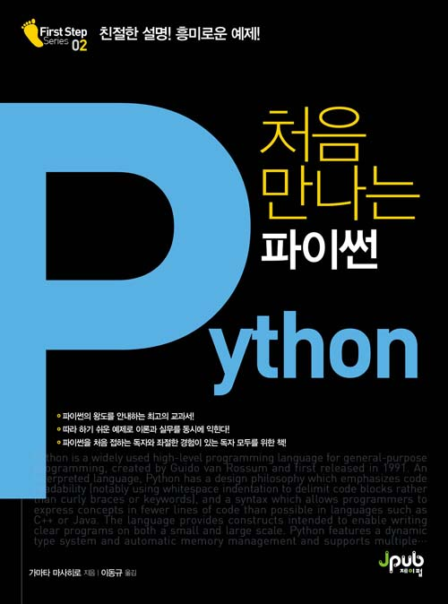

한국에서 일어나는 파이썬 관련 소식을 전합니다.
프로젝트
알고리즘 시각화를 위한 ipytracer by
이한 님이 주피터 노트북을 활용한 알고리즘 시각화 프로젝트인 ipytracer를 공개하였습니다.
블로그
미세먼지 대기정보 알림이 만들기 by Yun SeokJoon 님
AWS Lambda와 slacker를 활용하여 대기 정보를 알려주는 봇을 만드는 과정을 Yun SeokJoon 님이 정리하였습니다.
len()과 sys.getsizeof()의 차이점 by 불곰님
길이를 반환하는 len()과 메모리 크기를 반환하는 sys.getsizeof()의 차이점을 예시 코드와 함께 불곰님이 설명합니다.
발표 자료
파이콘 2017년 3월 세미나
세미나에 참석하신 분들을 대상으로 설문조사도 진행하고 있습니다.
Python Type Hints by Sunghyun Hwang 님
파이썬 3.5부터 도입된 타입 힌트에 대해 Sunghyun Hwang 님께서 자세히 안내합니다.
Python 채팅 구현하기 by Tae Young Lee 님
파이썬의 소켓 통신(socketio)과 플라스크를 활용하여 채팅 서버를 구현할 때 필요한 전반적인 지식과 구현 예를 Tae Young Lee 님이 정리하였습니다.
Python Tornado 웹서버 개발 by 박준범 님
토네이도 웹 서버를 활용하여 파이썬에서 비동기 웹 서버를 구현하는 과정을 박준범 님께서 설명합니다.
신간
파이썬 실무 프로그래밍 by 위키북스
- 조훈, 김종숙 지음
- 정가 45,000원
- 904쪽(1718g)
처음 만나는 파이썬 by 제이펍

- 가마타 마사히로 지음
- 이동규 옮김
- 정가 22,000원
- 320쪽(608g)
구인
에잇퍼센트
중금리 P2P 금융 서비스인 8percent를 서비스하고 있는 에잇퍼센트에서 경력 1년 이상의 파이썬 개발자를 구합니다.